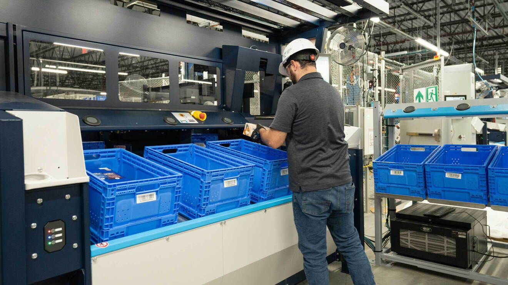

Flexible Infrastructure
Easy to update software over updating hardware.
Same hardware (glasses) can be used in many situations across FCs.
Make it easier to update processes when some FCs are further behind on hardware updates.
2025
Mixed reality for the ToteASRS pick workflow
What could fulfillment-center work look like five years from now?
AugmenTote explores mixed reality
as a
flexible layer over the ToteASRS pick workflow—bringing spatial guidance, contextual information, responsive
help, and more engaging moments directly into the associate's field of view.
Work at Amazon Robotics
ToteASRS Pick workflow across fulfillment centers
Unity3D, C#, Magic Leap 2, Mixed-reality prototyping
Background
Extended reality blends the physical and digital. For this project, mixed reality is the useful middle ground: virtual information can react to and sit within the real work environment instead of replacing it.


Easy to update software over updating hardware.
Same hardware (glasses) can be used in many situations across FCs.
Make it easier to update processes when some FCs are further behind on hardware updates.
Offer more personalized help, guidance, and feedback to associates.
Aid in the guidance and training of associates and allow for knowledge sharing.
Improve productivity by improving clarity and accessibility of the key information needed to complete tasks.
Allow for increased social interaction between associates.
Offer entertainment opportunities within the scope of the role.
Improve associates' well-being and help maintain a healthy work environment.
Case study
ToteASRS is a pick station that is a part of Amazon's new Seqoia system. This station allows for picking that supports low-volume and sub-same-day delivery, but the workflow can involve 8–12 hour shifts of repetitive and physically demanding work. AugmenTote asks where mixed reality can reduce ambiguity and repetitive searching without adding another screen to manage.


Whereas the typical ToteASRS system has totes to the right of the screen to place items in, the version used for this project instead includes a rebin wall, which introduces a new set of issues. The rebin wall is a set of shelves in which each specific shelf is associate with a particular user's order, usually up to four items. The screen on ToteASRS indicates which slot and the associate turns their body 190 degrees and need to find the correct slot. This intorduces a bit of difficulty as it is challanging to remeber which slot os the correct one when facing away from the screen.

Prototype
The prototype places graphics directly over the station and rebin wall so information appears in the spatial context where it is needed. Early experiments explored item information, scanned-state feedback, directional indicators, help controls, and visual cues attached to physical totes and slots.
User Experience Requirement #1
The mixed-reality proposal moves the most useful pieces of task information into the worker's field of view so less attention has to travel back and forth between the station and a separate screen.

Product name and ASIN can accompany a spatial representation of the item. A future goal is to use computer vision to help with the seek process and make the desired item easier to locate within a tote.
The proposal prioritizes the details associates actually use during a pick—barcode, item description, product identity, and exception reporting—while reducing unnecessary visual travel.


Spatial cues can distinguish the current slot from ongoing orders, communicate how many items remain, and make tote or slot transitions harder to miss.


Spatial cues can distinguish the current slot from ongoing orders, communicate how many items remain, and make tote or slot transitions harder to miss.

User Experience Requirement #2
A wrist-accessible help menu can expose issue reporting, manager contact, guided help, breaks, and optional game modes. PeccAI is proposed as a responsive helper that maps spoken descriptions of problems to the appropriate help state.

The prototype listens for speech, converts audio to text, classifies the issue, then displays the matching support flow.


User Experience Requirement #3
The proposal considers health, social interaction, entertainment, and visible progress as part of the work experience—not as separate systems layered on top of it.


Instead of background games, each pick can be regular or become a specific challenge with a direct reward. Challenges can respond to speed, placement, item type, wellness, or competitive play.
Timed picks, stars, gems, targets, and orientation challenges make specific picks meaningfully different rather than simply adding decoration behind the workflow.
Hydration and stretch prompts can coexist with shields, fog, fire, and other competitive effects that temporarily change the scoring state.


Direct wellness features include visible progress, music, hydration prompts, and scheduled stretch or rest suggestions. Associate feedback in the study specifically called for short recurring stretch breaks during long standing shifts.


User testing
Feedback advances to the next participant every 10 seconds. Use the controls to browse at your own pace.
Participant 1 of 7